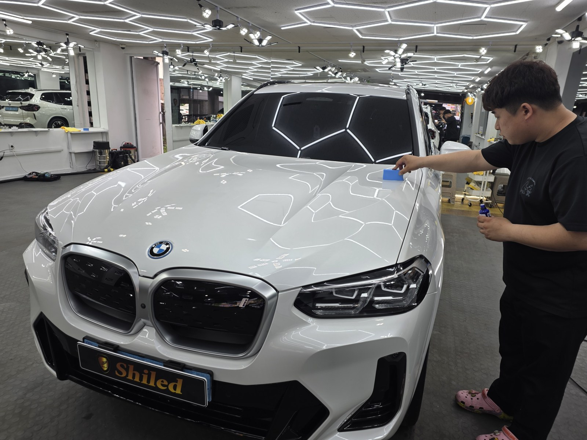
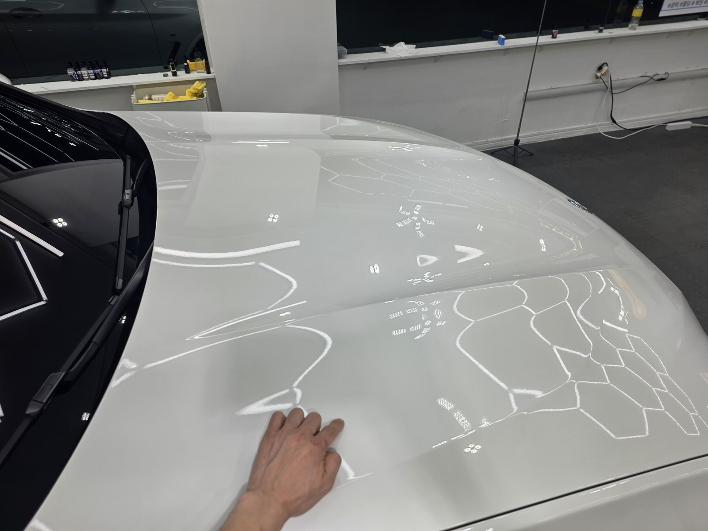
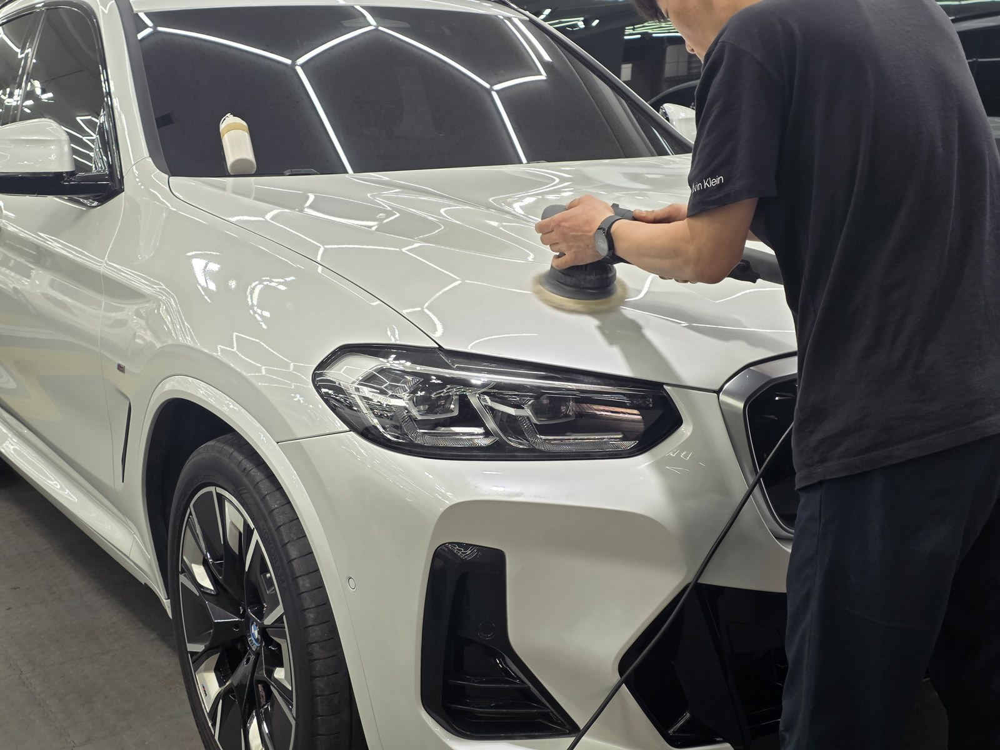
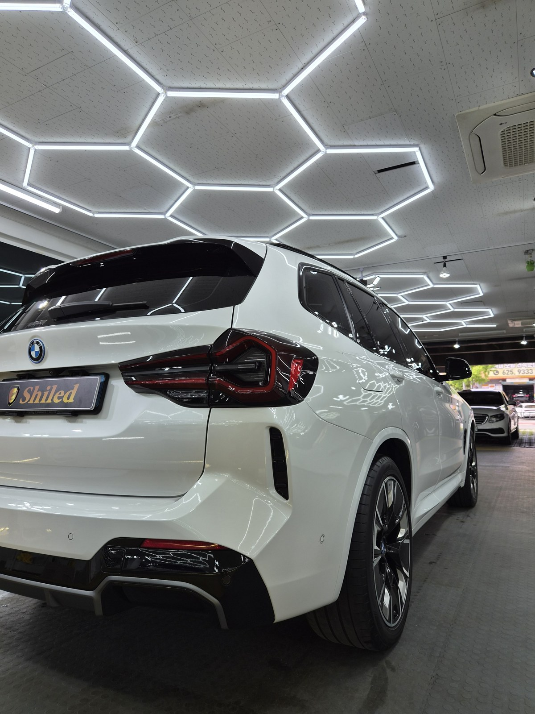
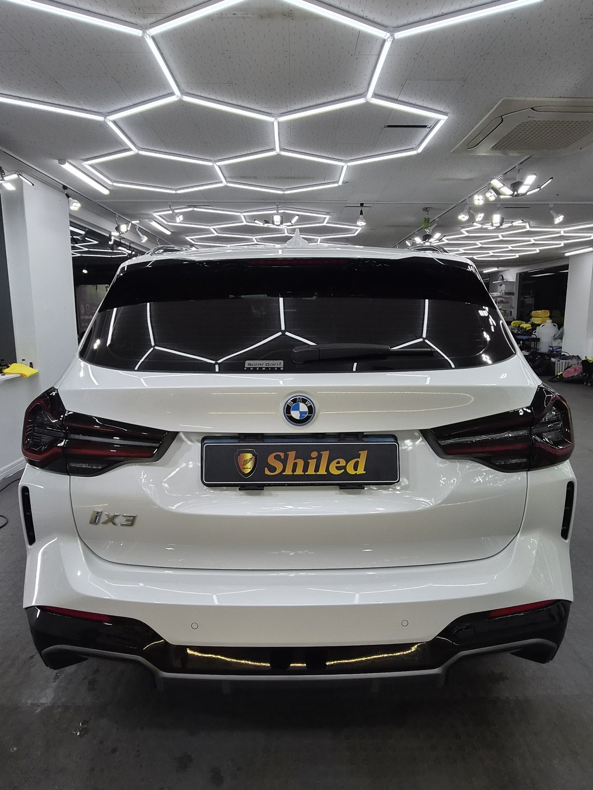
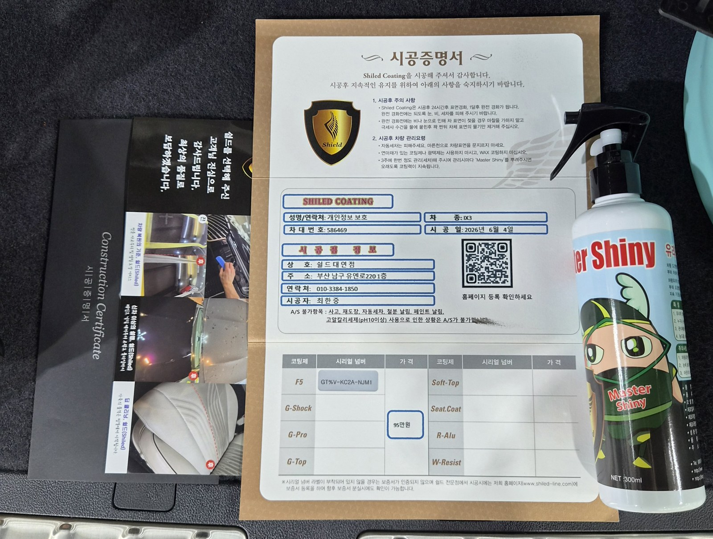

부산 쉴드광택에 들어온 BMW iX3 M Sport입니다. 화이트 바디입니다.
이 차는 광택으로 표면을 정리한 뒤, 발수·방오에 강한 G-TOP 싱글코팅으로 마감했습니다.

흰색 차도 광택이 필요한가
필요합니다. 흔히 흰색은 잔기스가 안 보인다고 생각합니다.
맞습니다. 안 보일 뿐, 없는 게 아닙니다. 흰색도 표면에는 스월과 오염이 그대로 쌓여 있습니다. 보닛에 조명을 비추니 거미줄 잔기스가 드러났습니다.

광택 전. 흰색도 조명을 비추면 잔기스가 드러납니다
표면을 정리하지 않고 코팅만 올리면
그 잔기스를 그대로 덮어 굳히는 셈입니다.
그래서 흰색도 광택으로 먼저 잡습니다. 잔기스 깊이를 보고 필요한 만큼만 컴파운드와 패드를 맞춰 깎습니다. 무조건 세게 깎는 게 정답이 아닙니다. 16년간 직접 시공하며 잡아온 감각입니다.

기술자의 팁
흰색은 잔기스가 잘 안 보이는 만큼, 광택의 효과도 한눈에 드러나지 않습니다. 그래서 조명 아래에서 표면 상태를 확인하며 작업합니다. 보이지 않는 차이를 잡는 게 흰색 광택의 핵심입니다.
코팅 전, 전처리가 9할입니다
좋은 코팅도 더러운 바탕 위에 올리면 의미가 없습니다.
디테일링 세차로 표면 오염을 걷어내고, 철분 제거제로 박힌 쇳가루를 녹여냅니다. 마스킹으로 고무·플라스틱을 보호하고, 탈지까지 끝내야 비로소 코팅을 올릴 면이 됩니다. 눈에 안 보이는 오염까지 잡는 게 퀄리티의 시작입니다.
왜 듀얼·트리플이 아니라 G-TOP 싱글인가
차 상태와 목적에 맞춰 구성을 정합니다. 무조건 여러 겹이 정답은 아닙니다.
이 차는 발수·방오를 중심으로 관리하기 좋게 잡았습니다. G-TOP은 저희 제품 중 발수·방오 성능이 가장 강한 코팅입니다. 빗물과 오염을 밀어내는 데 초점을 둔 단일 구성으로 마감했습니다. 코팅제는 대표가 화학공학 전공으로 직접 개발·제조한 제품입니다.
광택 영상으로 보기
패드가 도장면을 지나가며 표면이 정리되는 과정입니다.
하이그로시 광택 작업 영상
마감 후
화이트 바디 위로 헥사 조명이 또렷하게 맺힙니다.
왜곡 없이 떨어지는 반사가, 광택으로 표면을 평탄하게 잡고 코팅막이 고르게 올라갔다는 증거입니다.



모든 시공 차량에 시공증명서와 전용 관리제를 함께 드립니다
시공 후, 이렇게 관리하세요
코팅은 시공으로 끝이 아닙니다. 관리로 수명이 갈립니다.
완전 경화 전(약 하루)에는 비·눈·세차를 피해 주십시오. 자동세차(기계세차)는 브러시가 잔기스를 만드니 피하시는 게 좋습니다. 3주에 한 번 관리 세차 때 전용 관리제 '마스터샤이니'를 뿌려주시면 발수가 오래 유지됩니다.
자주 묻는 질문
Q. 흰색 차도 광택이 필요한가요?
A. 필요합니다. 흰색은 잔기스가 잘 안 보일 뿐, 표면에는 스월과 오염이 그대로 쌓여 있습니다. 정리하지 않고 코팅만 올리면 그 잔기스를 덮어 굳히는 셈이라, 흰색도 광택으로 먼저 잡습니다.
Q. 왜 듀얼·트리플이 아니라 G-TOP 싱글인가요?
A. 차 상태와 목적에 맞춰 구성을 정합니다. 이 차는 발수·방오를 중심으로 잡았습니다. G-TOP은 발수·방오가 강한 코팅이라, 빗물과 오염을 밀어내는 데 초점을 둔 단일 구성으로 마감했습니다.
Q. 전기차도 유리막코팅을 하나요?
A. 전기차도 도장 관리는 내연기관차와 똑같습니다. iX3도 클리어코트 위에 잔기스와 오염이 쌓이는 건 마찬가지라, 광택과 유리막코팅 과정이 동일하게 적용됩니다.
Q. G-TOP 코팅은 발수가 얼마나 가나요?
A. G-TOP은 저희 제품 중 발수·방오에 가장 강한 코팅입니다. 유지 기간은 관리에 따라 달라집니다. 자동세차를 피하고 손세차로 관리하면서 3주에 한 번 전용 관리제를 뿌려주시면 발수가 오래 유지됩니다.
Q. 쉴드광택 위치와 예약은 어떻게 하나요?
A. 부산 남구 유엔로220 1F 쉴드광택입니다. 예약·상담은 010-3384-1850, 대표 최한중이 직접 상담하고 책임 시공합니다.
신차든 출고한 지 된 차든, 시작점이 다르면 결과도 다릅니다.
제품을 직접 만드는 사람이 직접 시공합니다.
부산에서 광택·유리막코팅을 고민 중이시면 편하게 연락 주십시오.
어떤 차를 타냐보다 어떻게 타냐가 중요합니다~!
📞 010-3384-1850 견적 문의쉴드광택 · 부산 남구 유엔로220 1F · 대표 최한중